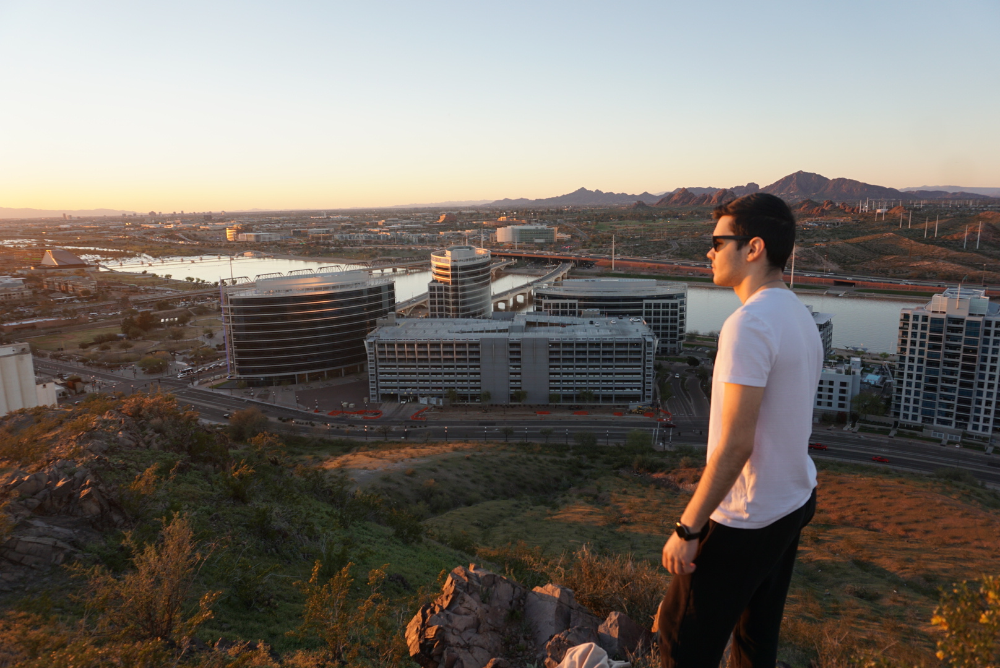

Arizona Dreaming
A Mountain
Dream of Visiting

{kind=link}
location
- A mountain is very close to the Arizona State University campus, some say that it's part of the campus itself.
A mountain is in Tempe, Arizona part of Maricopa County.
You're able to see a lot of the surrounding areas from the top of the mountain.
{kind=link}
Where it gets its name from
- A mountain is officially named the Tempe Butte.
It's an andesite butte of volcanic origin.
It's referred to as A mountain by locals because of the 60-foot tall gold painter letter "A" close to the top of it.
It previously had the letters "N" and "T" placed on it, however was changed after the Arizona State University was renamed.
{kind=link}
Popularity
- A mountain is so close to the campus, it's very popular with the students of Arizona State University.
Some Students hike the mountain every day for exercise, while others visit it weekly for the scenery.
The letter "A" on the mountain is protected by the students of ASU from the students of The University of Arizona.
The Students of UA try to paint their University's color on the "A" once a year during the annual ASU VS. UA football match.

Scenery
- From the top of the Mountain, you could view Downtown Tempe on the southwest, while the Tempe Town Lake is on the North.
All of the Arizona State University Tempe Campus can be seen from the top as well.
It's most popular time to visit would be by sunset, you're able to see the sun hit the mountains around the area and a cool breeze rushing in afterward, making it the perfect rest spot after a good hike.
{kind=link}
The Hike
- A mountain is not difficult to hike, with a well-paved trail leading to the top.
The hike to the top of the mountain would take around 30 to 40 minutes walking, while joggers could take up to 15 minutes to complete the Hike.
This makes the mountain perfect for students and locals that want to get a fast exercise in, while still making it easy for those who want to have a stroll for a change of scenery.